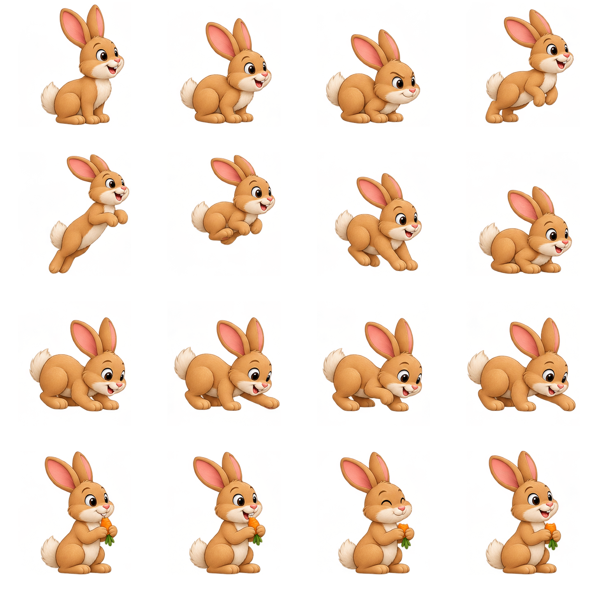
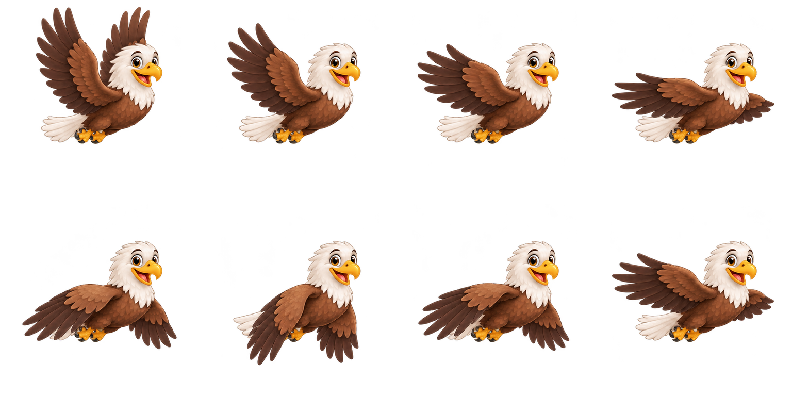
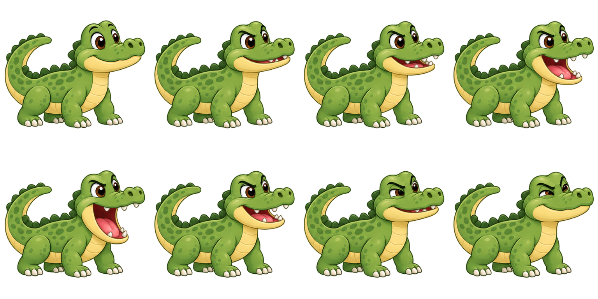
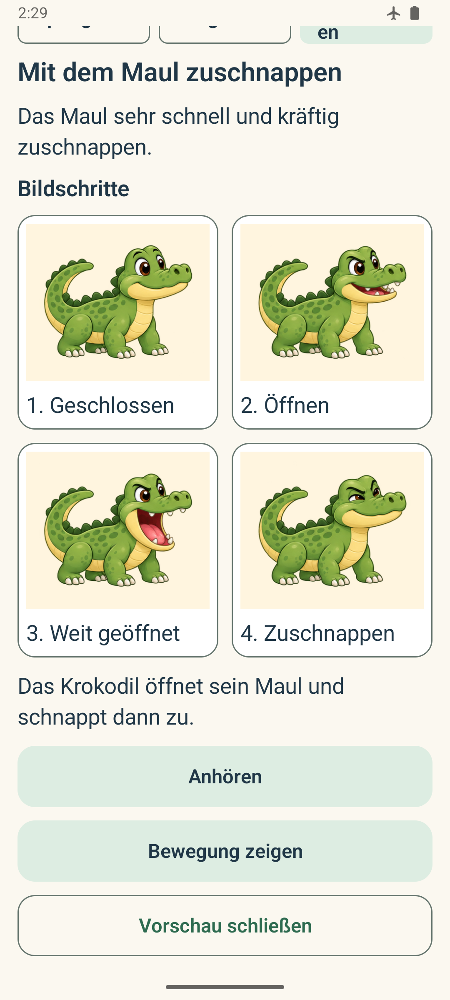

Jump · Springen
Look for the crouch, push-off, time in the air and landing.
Shared rabbit artwork
The first eight poses show jumping; the remaining eight support digging and nibbling.

BASTI · MOTION PREVIEW
Refreshed recordings of the real native Android preview, now using the shared artwork from the 53-lesson repair. Rabbit and eagle have eight movement poses; the expressive eight-pose crocodile is retained. The clips contain no recorded narration; Listen uses the app's offline English/German speech.
Look for the crouch, push-off, time in the air and landing.
The first eight poses show jumping; the remaining eight support digging and nibbling.

Look for the wings lifting, spreading and sweeping down.

Eight poses: focused anticipation, a wider opening, an 80ms snap and a small settling recoil.

Picture steps are available on request and replace motion when the device has animations switched off. Each step retains its own bilingual label.
